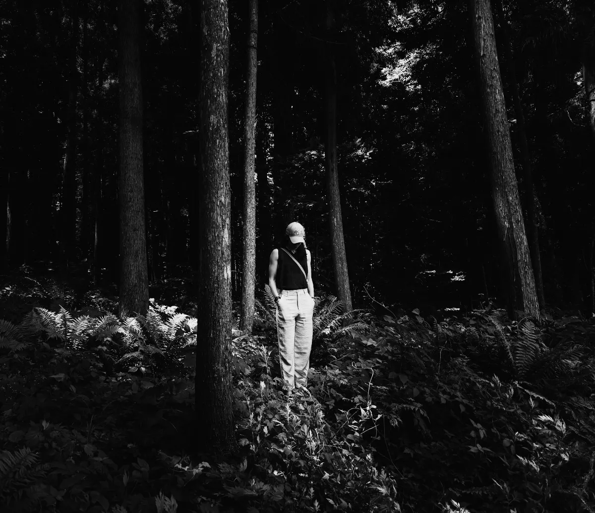

Behavior first, gym second.
Levanto pesas, leo estudios y me da curiosidad todo lo que pasa entre saber algo y hacerlo.
I lift weights, I read papers, and I’m interested in what happens between knowing and doing.
I write about strength, food and human behavior. One week I might ask how you can tell if you’re getting stronger. The next, why so many of us learned to treat eating less as an achievement, or why we keep making plans for a Monday that bears no resemblance to any Monday we’ve ever had.
Sometimes I start with a study. Sometimes I start with something I’ve caught myself doing. Either way, I want to know what holds up once you take it out of the paper and put it into an ordinary week.
Escribo sobre fuerza, comida y comportamiento. Una semana me pregunto cómo sabes si estás ganando fuerza. Otra, por qué aprendimos a ver comer menos como un logro. Y, de vez en cuando, por qué seguimos contando con que el próximo lunes, misteriosamente, nos va a sobrar el tiempo.
A veces parto de un estudio. Otras, de algo que me pillo haciendo a mí misma. Lo que me interesa es ver qué se sostiene cuando lo llevas a una semana cualquiera.
Un club pequeño para mujeres que quieren ser más fuertes y sienten curiosidad por entender su propio cuerpo. Lo lleva alguien a quien te gustaría tener de amiga.
A small club for women who want to get stronger and are curious about understanding their own bodies. Run by someone you’d want to be friends with.
La escribo en inglés.
Written in English.
¿Prefieres hablar? Agenda una llamada →Prefer to talk? Book a call →